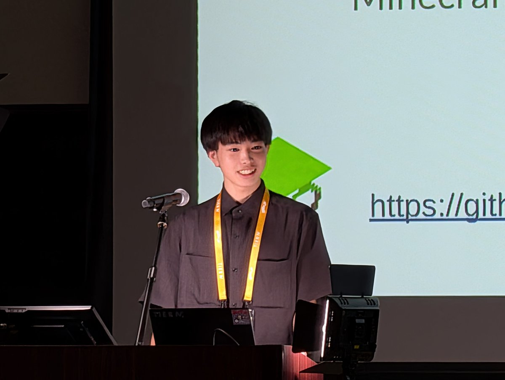

Minecraftの世界を舞台に、ROS 2を楽しく学ぶための取り組みについて発表しました。

ROSCon JP 2025で登壇
ROSCon JPは、ROS（Robot Operating System）に関わる開発者が集まり、技術や開発事例を共有する国内カンファレンスです。Open Roboticsから正式な許諾を受けた日本版ROSConとして開催されています。2025年は9月8日にワークショップ、9月9日にカンファレンスと企業展示が、名古屋のポートメッセなごやで開催されました。
今回の発表では、Minecraftを用いてROS 2を学ぶ方法を紹介しました。ロボット開発のためのミドルウェアであるROS 2は、初学者にとって概念やツールの幅が広く、最初の一歩に難しさを感じることがあります。そこで、身近なゲームの世界にロボットとプログラムを持ち込み、試しながら仕組みを理解できる学習環境を目指しました。
遊び心のあるMinecraftを入口にすることで、ROS 2のノードやトピックといった考え方を、実際の動きと結び付けて体験できます。ロボット開発に興味はあるけれど、どこから始めればよいか分からない人にも、楽しみながら技術へ踏み出してもらうことが狙いです。
今回の登壇を通じて、技術を分かりやすく伝えることの大切さを改めて感じました。これからも、ロボコンで培った開発経験をさまざまな形で共有し、ROS 2やロボット開発に挑戦する仲間を増やしていきます。